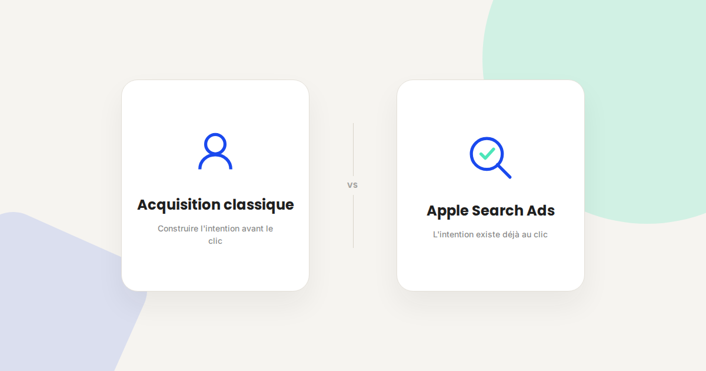
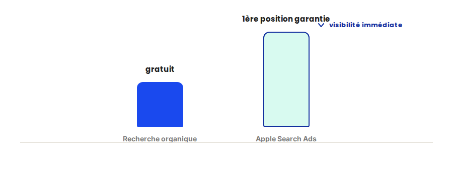

Apple Search Ads : le levier d'acquisition mobile sous-exploité
Sur la plupart des comptes mobiles que j'audite, Apple Search Ads est soit absent, soit géré en pilote automatique avec un budget résiduel. C'est une erreur : c'est l'un des rares canaux où l'intention d'installation est déjà là au moment du clic — pas à construire après.

Sur les comptes Apple Search Ads que j'accompagne, le constat est presque toujours le même au démarrage : le canal a été testé une fois, avec un budget résiduel et sans structure, avant d'être abandonné faute de résultats probants. Le problème n'est presque jamais le canal lui-même — c'est la façon dont il a été structuré dès le départ.
Ce qui ne change pas
Apple Search Ads reste un système d'enchères au coût par clic, avec une logique de pertinence proche de celle du SEA classique : plus votre fiche d'app correspond au mot-clé recherché, moins vous payez pour une position équivalente. Les fondamentaux d'ASO restent donc un prérequis — une fiche mal optimisée limite mécaniquement l'efficacité des campagnes, quel que soit le budget engagé.
Ce qui change vraiment
- L'intention d'installation est déjà présente à la recherche. Contrairement à une publicité Display qui doit capter l'attention d'un utilisateur non intentionniste, une recherche dans l'App Store signale déjà une intention active — le taux de conversion clic vers installation y est structurellement plus élevé.
- Le ciblage par correspondance exacte reste sous-exploité. Beaucoup d'annonceurs ne lancent que des campagnes en correspondance large ou automatique : cibler précisément les mots-clés de concurrents ou de catégorie en correspondance exacte permet un contrôle bien plus fin du coût par installation.
- La fenêtre d'attribution mobile complique la mesure du ROI. Entre le clic et l'installation effective (souvent différée), puis entre l'installation et l'événement de valeur (achat in-app, abonnement), la chaîne de mesure est plus longue que sur le web classique — un tracking mobile mal configuré sous-estime facilement la performance réelle.
- La concurrence sur les mots-clés génériques a fortement augmenté. Les mots-clés de catégorie large sont désormais très disputés ; les mots-clés de longue traîne et les requêtes de marque concurrente restent, eux, souvent sous-exploités et moins chers.

Un exemple qui illustre bien la différence
Sur une app que j'accompagne, le budget Apple Search Ads était concentré à 90 % sur des mots-clés génériques de catégorie, très disputés. En réallouant une partie du budget vers des mots-clés de marques concurrentes et de longue traîne en correspondance exacte, le coût par installation a baissé de 38 % en un mois, avec un volume d'installations quasiment stable — la même enveloppe budgétaire générait simplement plus de résultats.
Ce qu'il faut faire concrètement
- Structurez au moins trois types de campagnes : marque propre (défense), catégorie générique (acquisition large), et concurrents/longue traîne (opportuniste, souvent moins cher).
- Configurez un tracking mobile fiable reliant le clic à l'événement de valeur in-app, pas seulement à l'installation — sans ça, le ROI réel reste invisible.
- Optimisez votre fiche App Store en parallèle : chaque euro investi en Apple Search Ads est plus rentable si le taux de conversion de la fiche elle-même est bon.
- Surveillez le Search Match automatique (correspondance automatique) régulièrement : il capte parfois des requêtes hors sujet qu'il vaut mieux exclure une fois identifiées.
FAQ
Apple Search Ads fonctionne-t-il uniquement sur iOS ?
Oui, par définition, puisqu'il s'agit de publicité dans l'App Store. Pour Google Play, l'équivalent est Google App Campaigns, avec une logique différente.
Faut-il un gros budget pour démarrer sur Apple Search Ads ?
Non, le canal est accessible avec des budgets modestes. L'important est la structure des campagnes (types de mots-clés, correspondances) plus que le montant investi.
Comment mesurer le vrai ROI d'Apple Search Ads sur des achats in-app ?
Il faut un tracking mobile qui relie l'installation à l'événement de valeur (achat, abonnement) via le SDK d'attribution mobile utilisé, pas seulement le nombre d'installations rapporté par la plateforme.
Envie de structurer votre acquisition mobile ?
Pour aller plus loin, voir la page Apple Search Ads, la page Mobile Marketing, et la page Tracking mobile.
Pour continuer sur ce sujet.